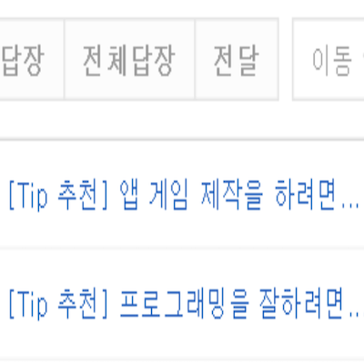

Implemented Functions
|  |
A function to Recommend Tips You can receive recommendations by e-mail according to the set cycle of tips that the user will like. |

|
A function to Evaluate Tips You can give a rating to a recommended tip or a tip searched by a search. These ratings are used as indicators to recommend another Tip. |

|
A function to Add Tips If you wish, you can register your own Tip. |

|
A function to Search Tips You can access the website and search for existing tips. This search and search is also used as an indicator to recommend another tip. |
Things to Contribute to Society
As you get more information by getting a little tip in your daily life, you can reduce the hassle of searching for the information you need every time, and lead a more rewarding life.
As you get more information by getting a little tip in your daily life, you can reduce the hassle of searching for the information you need every time, and lead a more rewarding life.
Background and Purpose
It happens that you miss out on important benefits to yourself and regret later. Also, it is too cumbersome to search for content that is important to you every time. So, to solve this problem as much as possible, I implemented a tip recommendation program using the R recommendation library.
It happens that you miss out on important benefits to yourself and regret later. Also, it is too cumbersome to search for content that is important to you every time. So, to solve this problem as much as possible, I implemented a tip recommendation program using the R recommendation library.
What I Learned
- I learned how to implement a recommendation algorithm with recommenderlab in R, and the difference between user collaborative filtering and item-based collaborative filtering.
- I learned how to link Java programs and R programs.
- I learned how to send mail using SMTP as Transport in Java and the difference between SMTP, POP3 and IMAP.
- I learned how to build a web server with Java and Servlet, and how to build a database with MySQL and connect with JDBC.
- I learned how to send HTTP requests from a web page and the difference between GET and POST.
- I learned how to implement web pages with JSP, CSS, and JavaScript.
Process
- I implemented an example recommendation based on evaluation information in the book 'Recommendation system using R' and implemented it as a recommendation algorithm with recommenderlab.
- I built a web page and a web server with JSP and Servlet, and built a database with MySQL and linked it with JDBC.
- I had Tip search results displayed at a time.
- I linked the R program with the web server and then sent the email from the web server, which was the most difficult.
- So, I referred the source code to link the R program to the web server after finding an example of running an R program in a Java program on Google.
- And I searched Google for an example of sending an email using Transport and SMTP in a Java program and analyzed the source code so that the email was sent from the web server.
- In this way, I was able to implement the program I wanted.
A thing to have Done my Best to Strengthen my Abilities
Implementing recommendation function using recommendation library in R, database (MySQL) and linking with homepage
Implementing recommendation function using recommendation library in R, database (MySQL) and linking with homepage
Overall Structure

Used Skills
JSP, CSS, JavaScript, Java, Servlet, HTTP, R, SMTP, MySQL
JSP, CSS, JavaScript, Java, Servlet, HTTP, R, SMTP, MySQL
Development Environment
Eclipse IDE, R Studio, PHPMyAdmin
Eclipse IDE, R Studio, PHPMyAdmin
Further Explanations
- In the second semester of 2017, I submitted my thesis as a bachelor's thesis and received notification of acceptance.
- Source Code